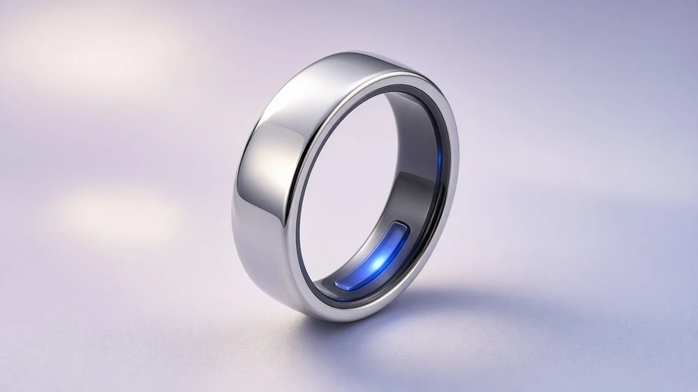

AI health summary You’ve been consistent with your sleep and recovery. Deep sleep is up 12 minutes versus your 14-day baseline. View full analysis
Smart ring Connected  Battery 94% Sensors · Active Temperature · Normal Connection · Strong Device settings